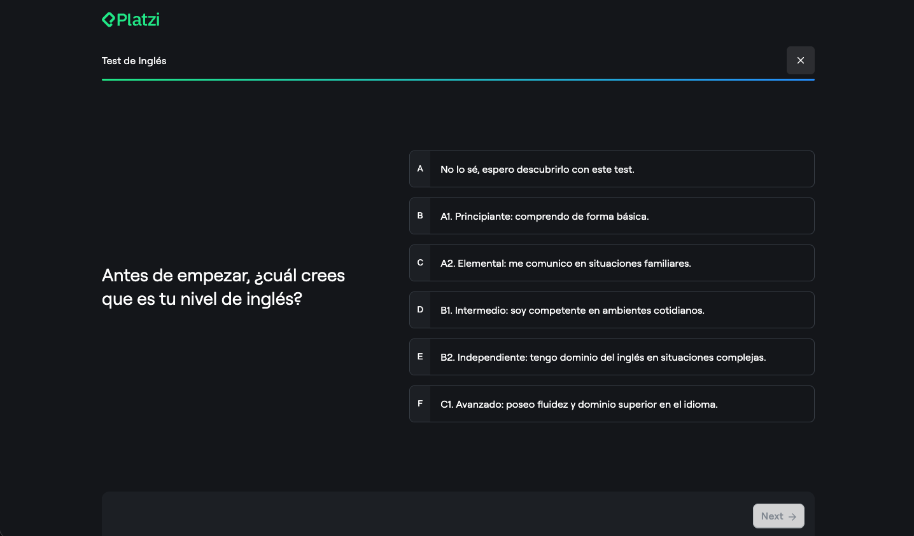
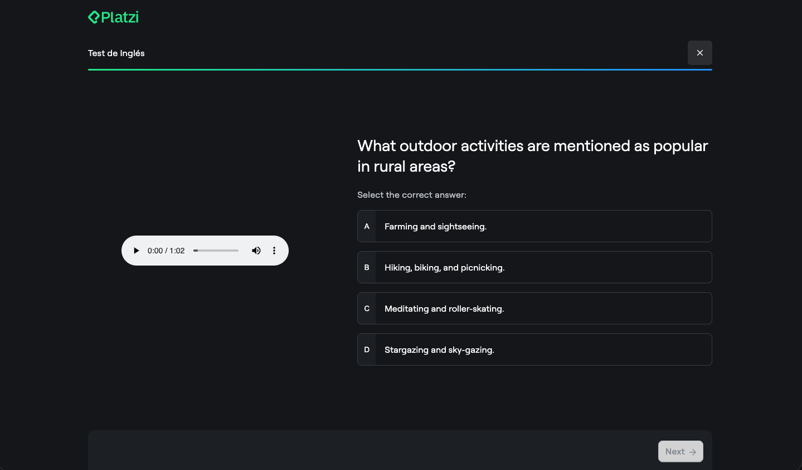
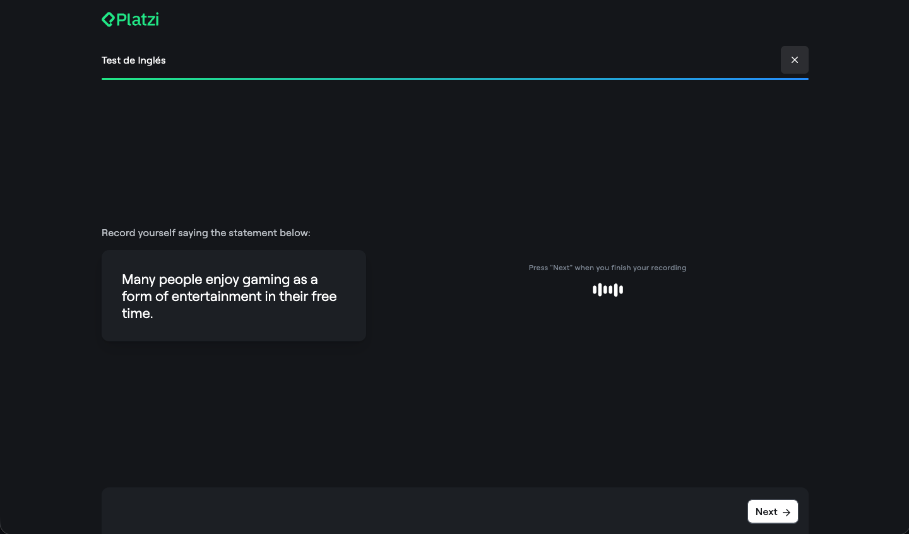
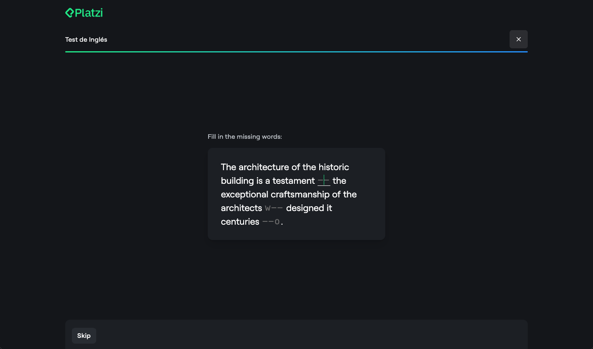

English Placement Test
An AI-powered adaptive assessment that accurately places learners across every CEFR level in under 30 minutes.
Impact
From onboarding tool to enterprise product
The placement test transformed English Academy onboarding and became a valuable tool for companies assessing employee proficiency.
200K+Individual students assessed
500+Companies using the test
2×Student registrations after testing
2×More classes viewed after the assessment
01 — Problem
The English learning dilemma
Students starting Platzi’s English Academy didn’t know where to begin and often abandoned their learning journey before it started.
AUnclear starting pointStudents couldn’t accurately self-assess their level, and got frustrated when courses were too advanced or too basic.
BNo personalized guidanceWithout a proper assessment there was no personalized path, making it hard to progress systematically through the curriculum.
CHigh drop-offStudents who couldn’t find the right content quickly disengaged.
02 — Solution
Computerized adaptive testing
An intelligent assessment that adapts every question to the learner’s previous answers.
Adaptive question flowQuestions adapt to responses for an efficient, accurate assessment.
Multi-competency evaluationTests every skill, aligned with CEFR framework standards.
AI speech assessmentPronunciation evaluation measuring fluency, completeness and prosody.
Quick resultsUnder 30 minutes, with immediate CEFR placement from A1 to C1.
Personalized learning pathCourse sequences generated from the identified level and skill gaps.
Enterprise readyScales from individual learners to companies assessing employees.
03 — How it works
The assessment flow
An adaptive algorithm working over a curated question bank.
1
Test introduction
Students self-select their perceived level, setting the starting point for adaptive questioning.

2
Multi-competency questions
Grammar, speaking, listening, writing and reading — the interface adapts to each question type.

3
AI speech evaluation
For speaking questions, AI evaluates pronunciation in real time: fluency, completeness and prosody.

4
Adaptive difficulty
Correct answers advance students to harder questions; incorrect ones bring easier ones.

5
Results and recommendations
Immediate CEFR placement with a learning path tailored to the student’s level and skill gaps.

04 — Key learnings
What I learned building this
01
Academic rigor matters
Research-backed assessment on CEFR standards built credibility and trust with learners and companies.
02
Adaptive beats comprehensive
Adaptive testing gave faster, more accurate results while improving the experience and completion.
03
Immediate value drives engagement
Instant results with personalized recommendations turned passive browsers into active learners.
04
B2C success unlocks B2B
A great consumer experience attracted enterprises, who adopted the tool to evaluate their employees.